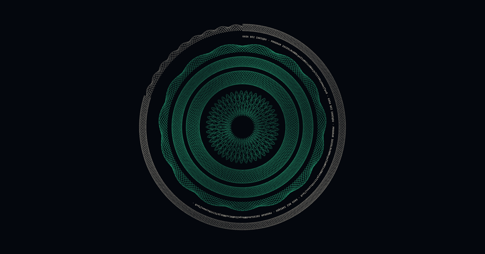
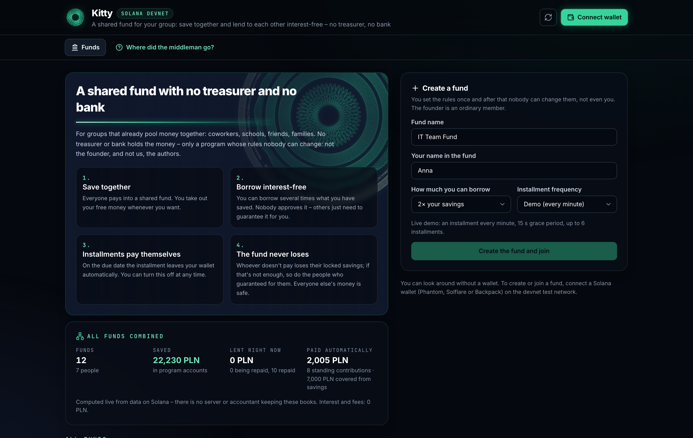
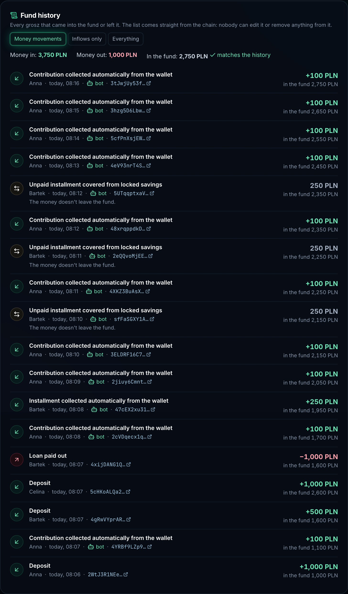
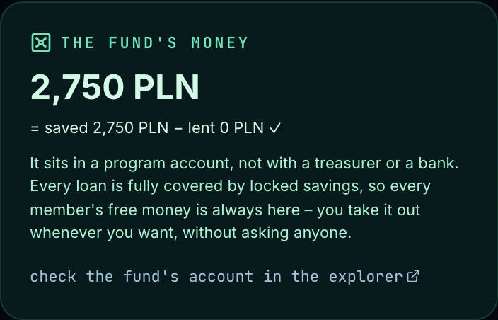
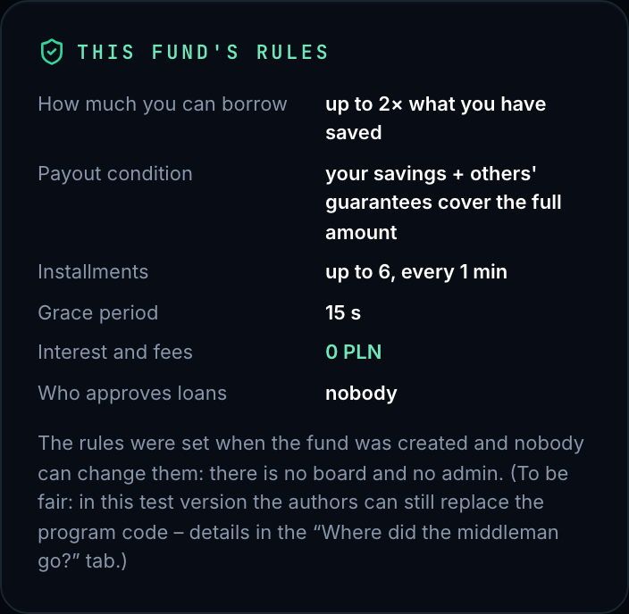

Wspólna kasa, minus skarbnik.
Oszczędności, pożyczki 0% i polecenia zapłaty dla grup – egzekwowane przez program na Solanie, a nie przez ludzi.
Współpracownicy, szkoły, znajomi i rodziny już dziś oszczędzają razem i pożyczają sobie nawzajem bez odsetek. Opiera się to na skarbniku, który trzyma pieniądze, zarządzie, który zatwierdza pożyczki, i płacach, z których potrąca się raty.
Pieniądze leżą na koncie należącym do programu. Zasady to publiczny kod bez klucza administratora – ani dla założyciela, ani dla nas.

Członkowie wpłacają do skarbca programu. Stała składka może być pobierana co okres.
Do wielokrotności oszczędności. Najpierw blokują się Twoje wolne oszczędności, resztę poręczają inni.
Gdy zablokowane oszczędności pokrywają 100% pożyczki, wypłaca się ona od razu. Nikt jej nie zatwierdza.
W dniu terminu rata schodzi z portfela w ramach odwoływalnej zgody SPL.
Pożyczkobiorca raz zatwierdza zgodę z limitem kwoty. W dniu terminu bot bez żadnych uprawnień wysyła pobranie, a program bierze tylko tyle, ile trzeba. Cofniesz zgodę – zapłacą zablokowane oszczędności.

skarbiec = Σ oszczędności − Σ pożyczone
Każda pożyczka jest w całości pokryta, zanim się wypłaci. Niezapłacona rata jest brana z zablokowanych oszczędności – najpierw pożyczkobiorcy, potem poręczających. Dlatego wolne pieniądze każdego członka zawsze są w skarbcu i można je wyjąć.


| Dziś | W Kitty |
|---|---|
| Skarbnik trzyma pieniądze | Skarbiec należy do programu; pieniądze wychodzą tylko według zasad |
| Zarząd lub bank zatwierdza pożyczkę | Nikt nie zatwierdza – wypłata, gdy zabezpieczenie pokrywa 100% |
| Pensja lub bank potrąca raty | Odwoływalna zgoda; program bierze tylko to, co wymagalne |
| Windykacja ściga dłużników | Po czasie na spóźnienie każdy może pokryć ratę z zabezpieczenia |
| Biuro kredytowe ocenia pożyczkobiorcę | Historia spłat każdego jest publiczna na łańcuchu |
| Zarząd może zmienić regulamin | Żadna instrukcja ich nie zmienia i nie ma klucza admina |
Każde twierdzenie z tej prezentacji to test, który możesz uruchomić, albo transakcja, którą otworzysz w eksploratorze.
Nikt nie trzyma pieniędzy.
Jaromir Sewastianow · Michal Piotrowski
github.com/jxroo/kasa-bez-zarzadu